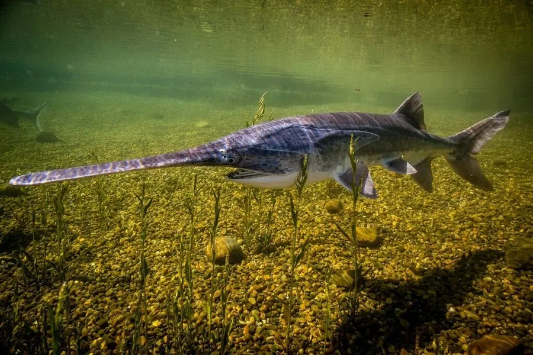

鱼类 · 动物界
匙吻鲟 Polyodon spathula

吻部延长成桨状、以浮游动物为食的鲟形目鱼类，原产密西西比河流域，是少数滤食性的大型淡水鱼。
- 分类
- 门脊索动物门纲辐鳍鱼纲目鲟形目科匙吻鲟科属匙吻鲟属
- 栖息环境
- 大型河流、湖泊和水库，偏好水流平缓、浮游动物丰富的水域
- 地理分布
- 美国密西西比河流域及墨西哥湾沿岸水系，中国有引进养殖
- 保护级别
- IUCN 易危（VU）；《濒危野生动植物种国际贸易公约》附录Ⅱ
物种志
匙吻鲟最醒目的特征是吻部，向前延长成扁平的桨状或匙状，长度可达体长的三分之一。体表没有成列的骨板，只有细小的鳞片，皮肤光滑；体色背部灰蓝或灰褐，腹部白色，身上常有斑点。成鱼体长一般 1–1.5 m，最大可达 2.2 m，体重 30–70 kg。
匙吻鲟原产美国密西西比河流域，栖息在大型河流、湖泊和水库中，喜欢水流平缓、浮游动物丰富的水域。它靠鳃耙过滤水中的浮游动物，是鲟形目中少见的滤食者。繁殖期溯河而上，在砾石底质的急流中产卵。由于水坝阻断洄游通道、河流污染和过度捕捞，野生种群下降，IUCN 将其列为易危。匙吻鲟生长快、肉质好，已被引入中国等地养殖，也常作为大水面增殖的品种。
形态与习性
- 食性滤食浮游动物，靠细密的鳃耙过滤水流
- 体长一般 1–1.5 m，最大可达 2.2 m
- 体重一般 30–70 kg
- 吻部桨状，长度可达体长的三分之一
- 寿命可达 30 年以上
- 繁殖溯河而上，在砾石底急流中产卵
趣味知识
- 匙吻鲟的吻部像一把长桨，上面分布着大量感觉器官，可探测水中的微小电场。
- 它是鲟形目中少见的滤食者，主要靠鳃耙过滤浮游动物。
- 匙吻鲟生长快，已被引入中国等地作为养殖和增殖品种。